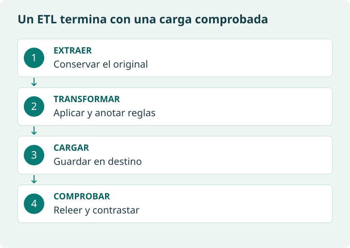

Qué hace cada herramienta
| Herramienta | Responsabilidad | Límite que debes recordar |
|---|---|---|
| Hoja de cálculo | Explorar tablas, filtrar y resumir. | Una edición manual requiere registrar los pasos para repetirla. |
| pandas | Leer tablas, convertir, filtrar, agrupar y exportar. | No decide qué dato es verdadero. |
| requests | Intercambiar peticiones y respuestas HTTP. | No ejecuta el JavaScript de una página. |
| BeautifulSoup | Analizar HTML y seleccionar nodos. | No descarga por sí sola la página ni es un navegador. |
| SQL / SQLite | Consultar tablas y relaciones. | SQL es el lenguaje; SQLite es un motor. |
| Herramienta ETL | Coordinar extracciones, transformaciones y cargas. | Necesita reglas, supervisión y validaciones igualmente. |
En Python, import carga una biblioteca ya instalada. Instalarla y utilizarla son operaciones distintas. Para los ejemplos de HTML del cuaderno puedes ejecutar %pip install beautifulsoup4 si no está disponible. SQLite forma parte de la biblioteca estándar de Python.
ETL mínimo: guardar también es parte del trabajo
Extraer obtiene los registros; transformar aplica reglas; cargar guarda el resultado en su destino. Un gráfico es un análisis posterior, no sustituye a guardar la tabla. ETL puede realizarse con un programa pequeño: no requiere una plataforma empresarial.

from pathlib import Path
import pandas as pd
tabla = pd.DataFrame({"id": [1, 2], "ciudad": ["Madrid", "Santander"]})
Path("resultados").mkdir(exist_ok=True)
tabla.to_csv("resultados/clientes.csv", index=False, encoding="utf-8")
recuperado = pd.read_csv("resultados/clientes.csv")
assert list(recuperado.columns) == list(tabla.columns)
assert recuperado.to_dict("records") == tabla.to_dict("records")
print("Carga comprobada:", len(recuperado), "filas")La salida es «Carga comprobada: 2 filas». index=False evita añadir el índice como columna. CSV no conserva todos los tipos de pandas: al reabrir, debes declarar los tipos y formatos relevantes, especialmente fechas e identificadores con ceros iniciales.
¿Qué ocurre si una unión por ciudad encuentra dos filas para Madrid en la tabla auxiliar?
Puede multiplicar registros. Comprueba la unicidad de la clave de la tabla auxiliar y utiliza una validación de relación, por ejemplo merge(..., validate="many_to_one"), cuando esa sea la relación prevista.
Cuando algo falla
| Síntoma | Revisión inicial |
|---|---|
| FileNotFoundError | Comprueba nombre, carpeta y si has subido el archivo a Colab. |
| KeyError | Imprime df.columns o las claves del diccionario; revisa espacios y mayúsculas. |
| Una sola columna al leer CSV | Comprueba si el separador es coma o punto y coma. |
| ModuleNotFoundError | Instala la biblioteca en la sesión correcta y vuelve a importar. |
| Tabla vacía tras filtrar | Revisa tipos, categorías, espacios y si el resultado vacío es legítimo. |
| Error HTTP o espera agotada | Revisa URL, parámetros y conexión; no sustituyas datos reales por simulados sin avisar. |
Material de referencia original
Para empezar a trabajar con extracción y preparación de datos no hace falta ser experto ni usar herramientas muy complicadas.
a) Excel / Google Sheets
b) Python + librerías
c) Herramientas ETL (más avanzadas)
Excel / Google Sheets
Son herramientas muy accesibles y suficientes para tareas básicas:
- Filtros: para ver solo ciertos registros.
- Buscar y reemplazar: para corregir errores de escritura.
- Funciones (SI, CONTAR, SUMAR.SI, etc.).
- Tablas dinámicas: para hacer resúmenes (por ejemplo, número de clientes por ciudad).
Excel es muy útil para aprender los conceptos antes de pasar a herramientas más avanzadas.
Python + librerías
Cuando los datos crecen o queremos automatizar:
- pandas:
- Librería para manipulación y limpieza de datos.
- Permite leer CSV, Excel, JSON… y trabajar con ellos de forma muy flexible.
- requests:
- Librería para hacer peticiones a APIs.
- Sirve para “llamar” a una URL y obtener datos (normalmente JSON).
- BeautifulSoup:
- Librería para hacer scraping web.
- Permite extraer información de páginas HTML.
Estas herramientas permiten construir scripts (programas) que:
- Descargan datos (de un fichero o una API).
- Limpian y transforman esos datos.
- Los guardan listos para análisis o visualización.
Herramientas ETL (más avanzadas)
ETL significa: Extract – Transform – Load (Extraer – Transformar – Cargar).
Algunos ejemplos son: Talend, Pentaho, Apache NiFi.
Se usan sobre todo en entornos profesionales donde hay que mover grandes volúmenes de datos entre sistemas, de forma regular (por ejemplo, todos los días).
Para este tema no es necesario profundizar en ellas, pero es útil conocer que existen.